|
|
HELP FIND THE FOLLOWING LOCATIONS
PAGE 63
GIDEON’S WAY: To Catch A Tiger (Les Norman, April 1965)
N47,


Unknown 2- Nurse Smith is rushed to hospital in an ambulance after being knocked down.

Unknown 3 – John Borgman tries to relax at home with his second wife Charlotte. Later John Borman arrives back at his house after being questioned by Commander Gideon.
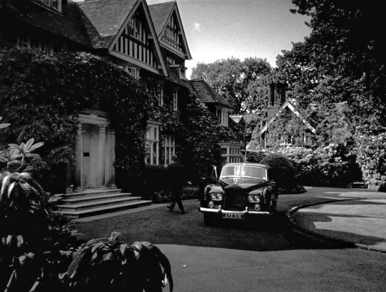
Unknown 4- Commander George Gideon drives his family to the cinema after a meal in town.
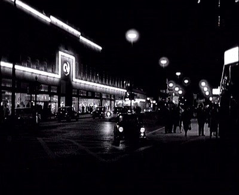

Unknown 5- On the way to the cinema with his family, Commander George Gideon notices John Borgman crossing the road and entering an apartment block.
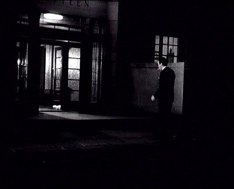
Unknown 6 – Samuels watches from his house as a police constable approaches.
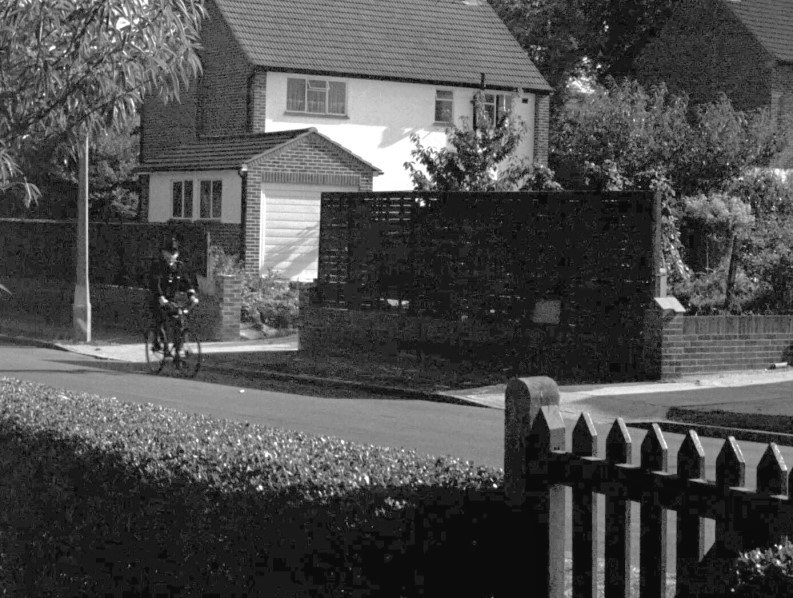
Unknown 7- A police constable guards the gates of the cemetery as the body of Leah Anne Borgman is disinterred by the police.
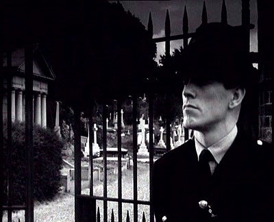
Premier
House,
(Identified by Geoff
Dodd, April 2006)
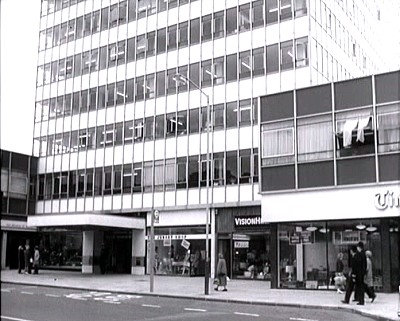 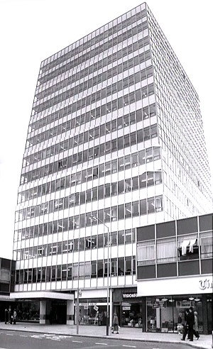
VICTORIA
STATION, SW1
(Spotted by Jaz
Wiseman, April 2005)
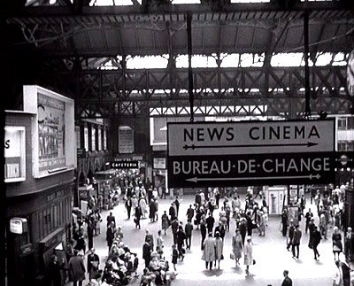
Wormwood
Scrubs, W12
Establishing shot of the gateway as Cuthbertson arrives to talk to John Borgman.
(Spotted by Jaz
Wiseman, April 2005)
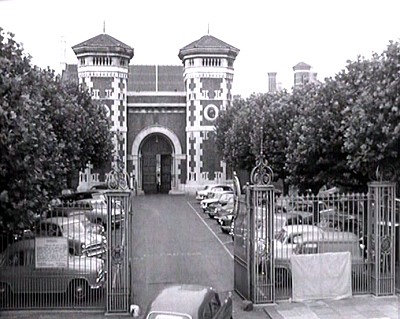
GIDEON’S WAY: The Rhyme and the Reason (John Gilling, August 1964)
Unknown 1– Bill Rose takes his girl, Winifred Norton for a romantic ride in the countryside.
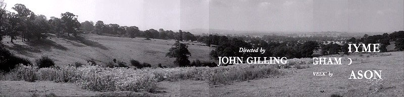
Unknown 2- Bill Rose (Alan Rothwell).and Winifred (Carol White) are interrupted by a gang of rockers who decide they don’t like the ‘mod’ Bill. Chief Inspector Keen and Mary Henderson just happen to be in the area driving.
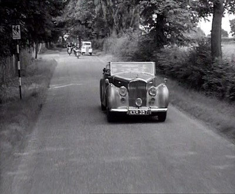

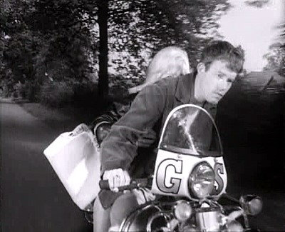

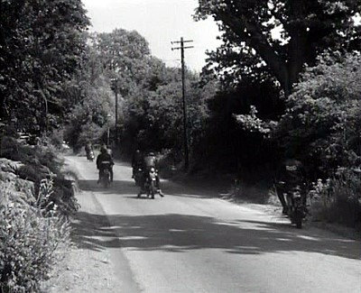
The body of the murdered
Winifred Norton is discovered.
(Identified by Jaz
Wiseman, July 2005)
Battersea
Commander Gideon declines his son’s suggestion that they visit the fun-fair.

Winnie (Carol White) meets
Bill Rose (Alan Rothwell).at

(Identified by Stephen Carter, August 2007)


 Stephen Carter – “Evidence: (1)
1881 census lists "Old Farm House, The" public house on Doddington Grove
(later renamed
Stephen Carter – “Evidence: (1)
1881 census lists "Old Farm House, The" public house on Doddington Grove
(later renamed
(Identified by Stephen Carter, August 2007)
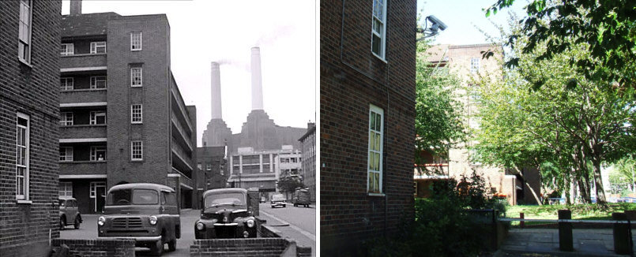
photo:
Stephen Carter
Wormwood
Scrubs, W12
Establishing shot of the prison as Mary Rose goes to visit her brother in
prison.
(Spotted by Jaz
Wiseman, July 2005)

Unknown 5- When she is discovered by Fred Norton (Edward Evans), Mary Rose (Jo Robottom) runs from the Norton’s house in to the back alleyway. Fred follows in hot pursuit.

 Stephen Carter
– “Might be
Stephen Carter
– “Might be
[Source: 1913 OS map reproduced at 1:4340 scale and 1950s aerial photo. Needs verification.”
Unknown 6- Fred Norton (Edward Evans) continues to chase Mary Rose (Jo Robottom) through the streets.
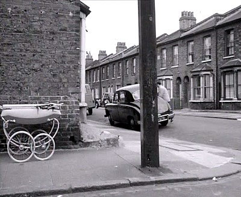
 Stephen Carter
– “Might be
Stephen Carter
– “Might be
Culvert
Road railway tunnel, SW11- Fred Norton
(Edward Evans) peruse Mary Rose (Jo Robottom) through a railway underpass, Keen
is not far behind.
(Identified by Stephen Carter, August 2007)
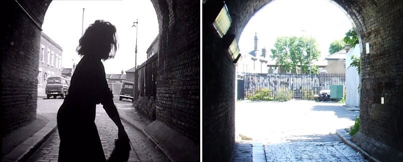
photo:
Stephen Carter
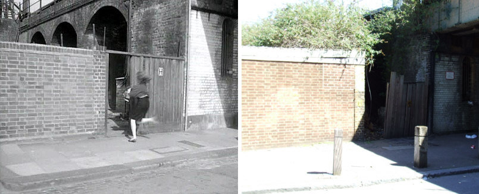
photo:
Stephen Carter
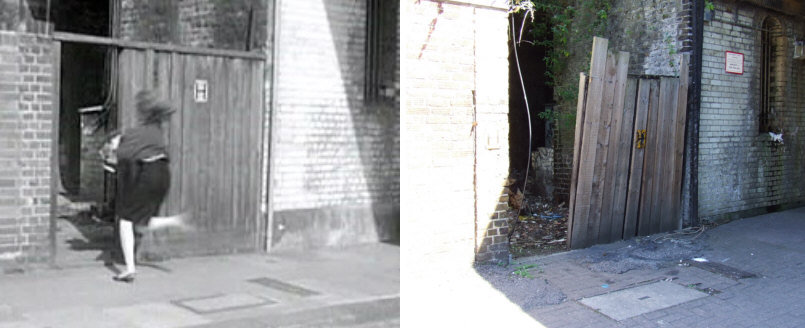
photo:
Stephen Carter
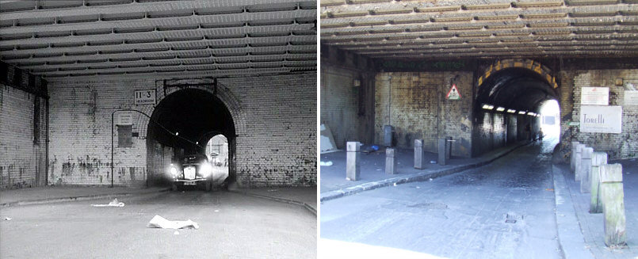
photo:
Stephen Carter


The British Flag,
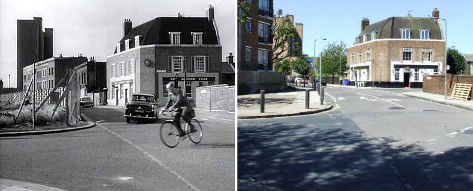
photo:
Stephen Carter
Rowditch Lane, SW11
(redeveloped)- Fred Norton (Edward Evans) chases Mary Rose (Jo Robottom) over a pile of
demolition rubble.
(Spotted by Stephen Carter, August 2007)

Wasteground, Thessaly Road, SW11- Fred Norton (Edward Evans) continues to chase Mary
Rose (Jo Robottom) into a patch of derelict land.
(Identified by Stephen Carter, August 2007)
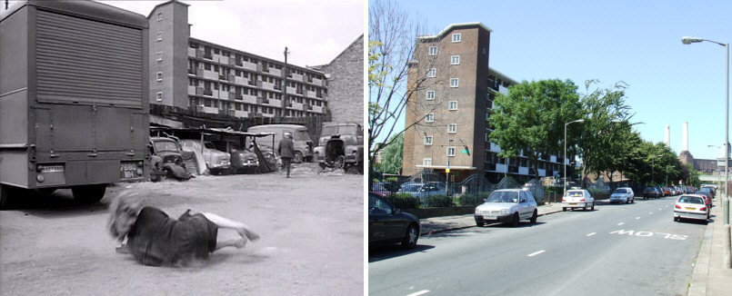
photo:
Stephen Carter
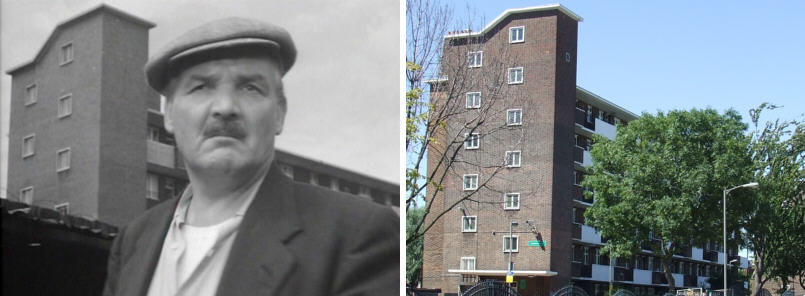
Culvert
Place, SW11- Fred Norton (Edward Evans)
chases Mary Rose (Jo Robottom) nearer the railway. Mary tries to get help from
the passing motorcycle gang led by Rod Jenkins (Clive Coilin Bowler). Chief
Inspector Keen’s (Alexander Davion)
squad car is in the area almost immediately and they try to cut the pair off.
(Identified by Stephen Carter, August 2007)


photo:
Stephen Carter
Road to
Battersea from

Battersea
Power Station, SW8
Fred Norton (Edward Evans)
finally catches up Mary Rose (Jo Rowbottom) on the station's railway sidings
and is about to stab her but is caught Detective Chief Inspector David Keen
(Alexander Davion) and his men.
(Identified by Jaz
Wiseman, July 2005)


 Stephen Carter’s annotated
photograph:
Stephen Carter’s annotated
photograph:

Think you know a spot? Need a bigger image? Email me.
< Previous | Index | Avengerland | Next >
Copyright © 2003 Anthony R. McKay